Os videogames começaram como experimentos científicos. Em 1958, William Higinbotham criou "Tennis for Two" em um osciloscópio, considerado um dos primeiros jogos eletrônicos interativos. Em 1962, Steve Russell desenvolveu "Spacewar!" no MIT, um dos primeiros jogos para computador.
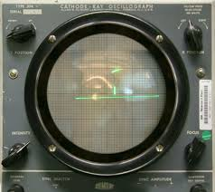
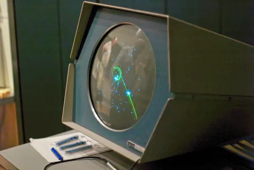
A década de 1970 marcou o início da indústria dos videogames. O Pong (1972), da Atari, foi o primeiro grande sucesso comercial. O Magnavox Odyssey (1972) foi o primeiro console doméstico. O Atari 2600 (1977) popularizou os jogos em cartucho.
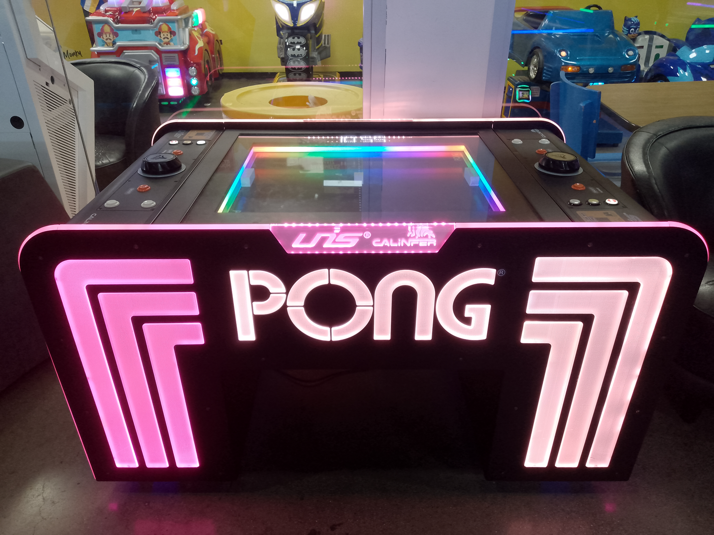
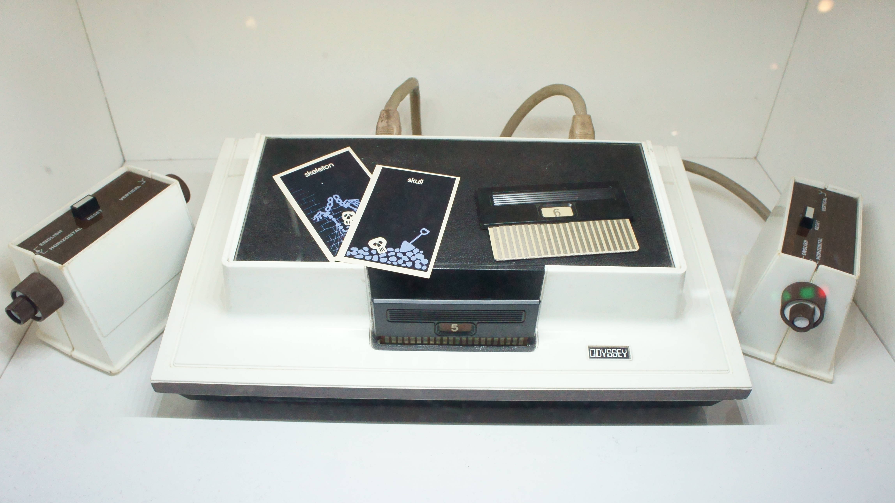
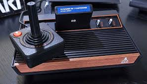
Os anos 1980 foram marcados pelo boom dos arcades, com clássicos como Pac-Man, Donkey Kong e Space Invaders. Nos lares, o Nintendo Entertainment System (NES) e o Sega Master System dominaram, trazendo franquias como Super Mario Bros. e Sonic.
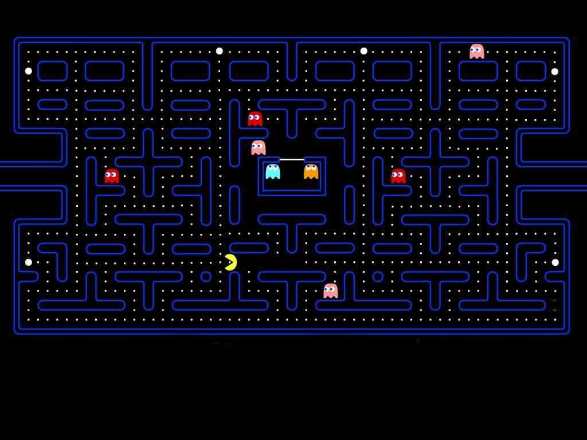
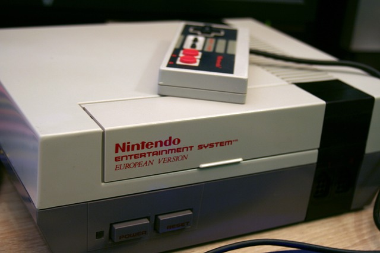
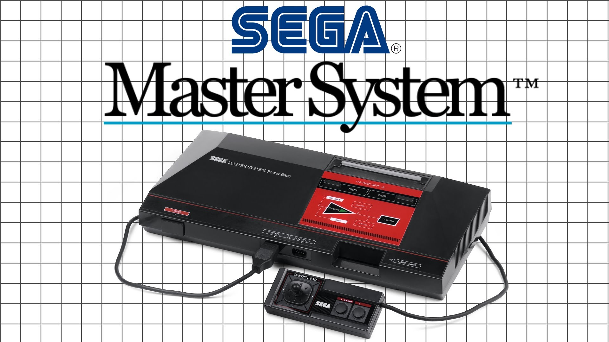
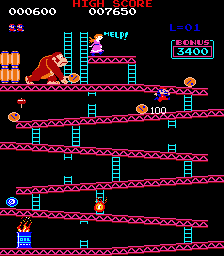
A década de 1990 trouxe gráficos melhores e o início do 3D. O Super Nintendo (SNES) e o Sega Genesis travaram uma batalha épica. O PlayStation (1994) revolucionou com jogos em CD e gráficos 3D, enquanto o Nintendo 64 trouxe experiências inovadoras como Super Mario 64.
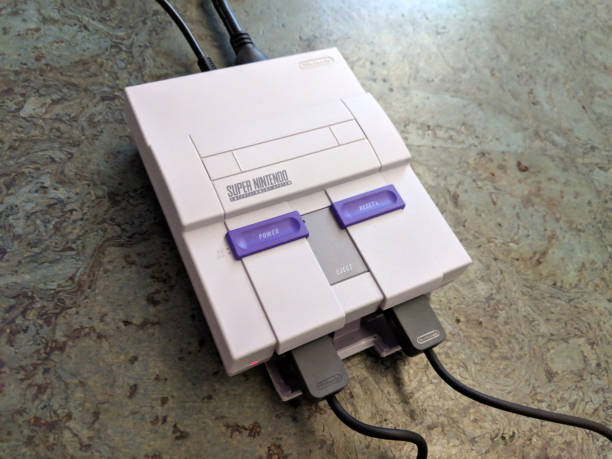
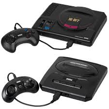
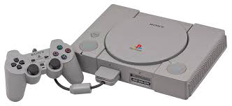
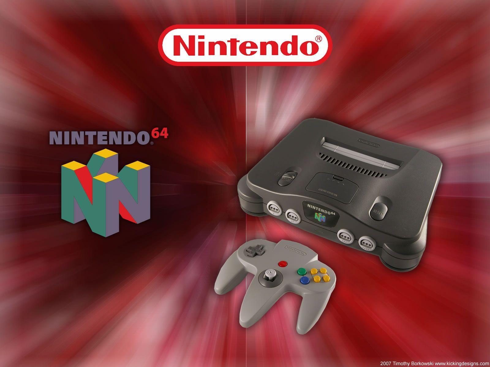
O PlayStation 2 tornou-se o console mais vendido da história. A Microsoft entrou no mercado com o Xbox. O GameCube e o Dreamcast também marcaram época. O Xbox Live e o PlayStation Network popularizaram o jogo online.
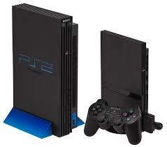
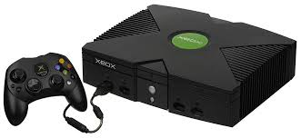
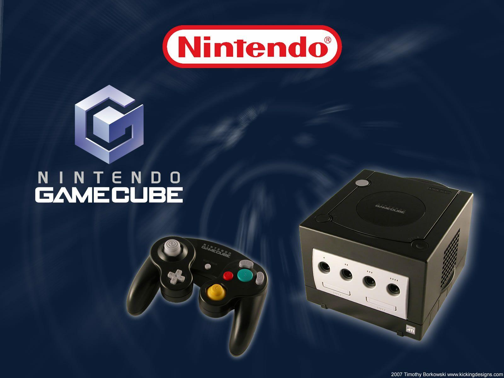
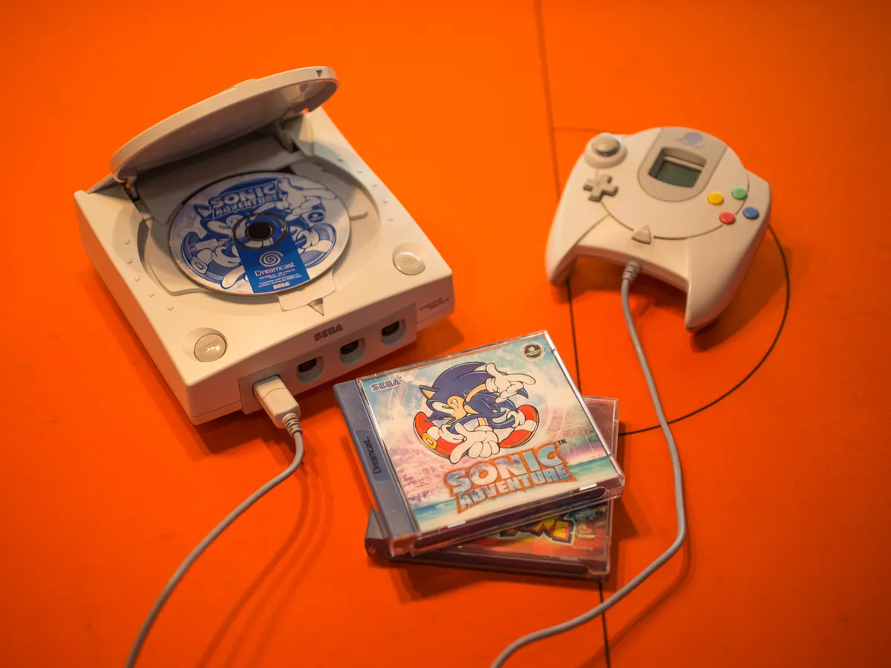
Consoles como PlayStation 4, Xbox One e Nintendo Switch trouxeram gráficos de alta definição e experiências inovadoras. O mercado mobile explodiu com jogos como Angry Birds e Pokémon GO. A realidade virtual e o streaming começaram a ganhar espaço.
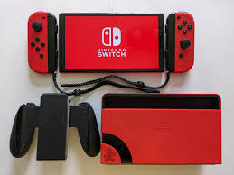
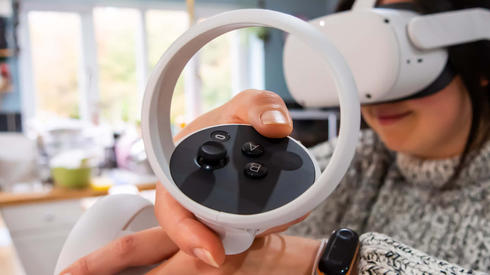
Hoje, os videogames são uma das maiores formas de entretenimento do mundo, com eSports, jogos em nuvem, inteligência artificial e experiências cada vez mais imersivas. O futuro promete ainda mais inovações!
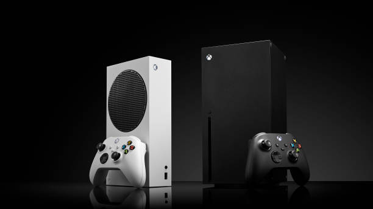
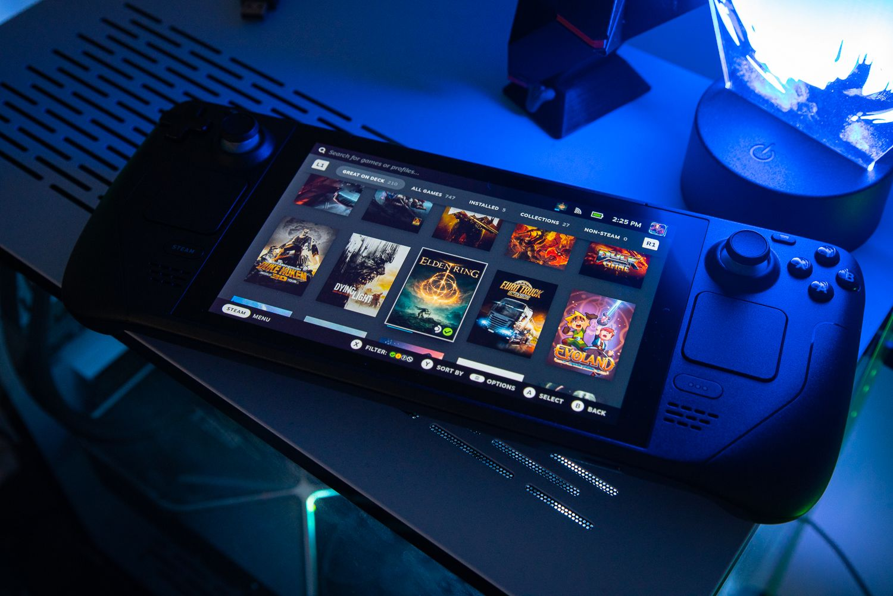